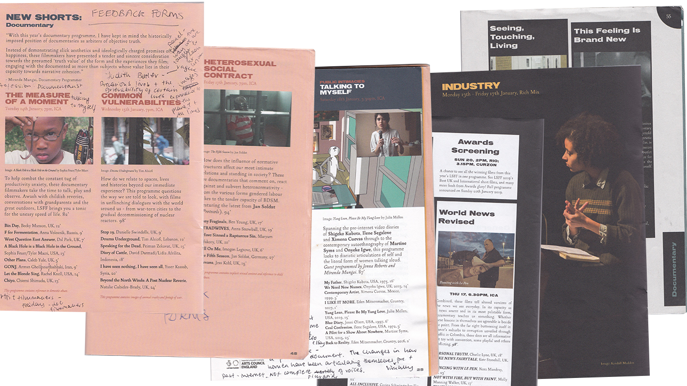

I am a freelance documentary film curator, events producer, and facilitator experimenting with participatory discussion and creative workshops as forms of post-screening engagement. I prioritise creating opportunities for audiences to engage in dialogue with one another as well as with any invited guests. I prioritise fairly remunerating all artists and finding opportunities to screen films beyond a single festival cycle.
My curatorial area of expertise is short documentary filmmaking, with a particular interest in experimental, hybrid, and new media works. I produce and facilitate spaces that place inclusivity and accessibility first. You can find out more about my practice [here] and get in touch with me [here].
*This website is continually under construction and may sometimes be a bit wonky*
